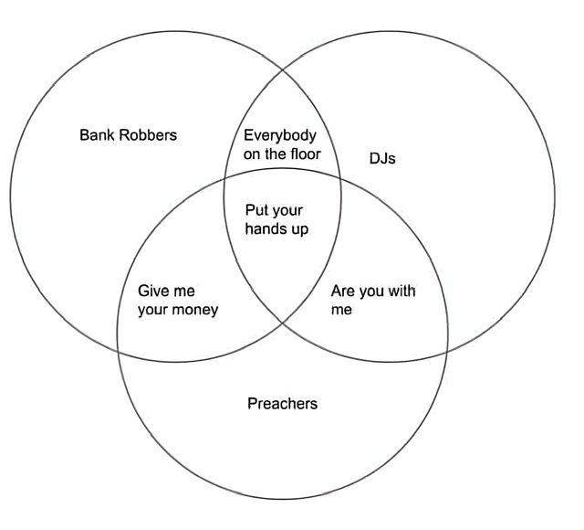

📡 Küldetés-eligazítás

📡 SZVETI: Átkapcsollak Dr. Bizarrhoz. A multiverzumban is pontosan meg kell adnunk, mely világokat vizsgáljuk. Egy halmaznál az elemeket soroljuk fel, vagy megadjuk, milyen feltétel alapján kerülnek bele. Dr. Bizarr megmutatja, hogyan írjuk ezt le.
Halmazokkal csoportosítjuk az elemeket, és leírjuk, mely csoportokba tartoznak. Erre a hétköznapokban is sok példát találunk.
💡 Hol találkozol vele?
- Filmválogatás: egy gyűjtemény akciófilmjei és vígjátékai két halmazt alkotnak. A metszetükbe azok a filmek tartoznak, amelyek mindkét műfajhoz illenek; az uniójukba azok, amelyek legalább az egyikhez.
- Meghívólista: két szakkör közös programjához egyesítjük a két névsort. Aki mindkét szakkör tagja, az is csak egyszer szerepel a meghívottak között.
- Biológiai rendszertan: az egy fajhoz tartozó egyedek halmaza részhalmaza a nemzetséghez tartozó egyedek halmazának, az pedig a családhoz tartozókénak. Itt a halmazok elemei az egyedek.
- Hétköznap: „akik focizni és úszni is járnak” — ez egy metszet, amit Venn-diagrammal rajzolsz le.

Halmaz, elem, megadás
📗 Alapfogalom — halmaz és elem
A halmaz bizonyos meghatározott, egymástól különböző dolgok összessége. Egy halmaz akkor adott, ha bármely dologról egyértelműen eldönthető, hogy hozzátartozik-e. A halmaz „tagjait” elemeknek hívjuk.
Halmazokat nagybetűvel (\(A, B, C\ldots\)), elemeket kisbetűvel (\(a, b, x\ldots\)) jelölünk. Ha \(x\) eleme \(A\)-nak: x ∈ A; ha nem: x ∉ A.
Kétféleképp adhatsz meg egy halmazt
📘 Megadási módok
1) Felsorolással (elemek listája): \(A = \{1, 3, 5, 7, 9\}\)
2) Utasítással / halmazépítővel (közös tulajdonság): \(A = \{x | x \in \mathbb{N} \land x \text{ páratlan} \land x < 10\}\)
A \(|\) jel olvasata: „olyan x, amelyre…”. Ugyanaz a halmaz sokféleképp leírható!
📗 A leggyakoribb számhalmazok
\(\mathbb{N}\) = természetes számok \(= \{1, 2, 3, \ldots \}\) · \(\mathbb{Z}\) = egészek · \(\mathbb{Q}\) = racionálisak · \(\mathbb{R}\) = valósak.
Megegyezés ebben a tananyagban: ℕ a pozitív egészekkel kezdődik (1-től).
✏️ Kiképzési szimuláció
\(C = \{x \mid x \text{ a „matematika” szó egy betűje}\} = \{m, a, t, e, i, k\}\) — az ismétlődő betűk csak egyszer számítanak, így 6 eleme van.
Az elemszámot \(|C| = 6\) jelöli.
⚠️ Kán csapdája
A halmazban a sorrend és az ismétlés nem számít: \(\{a, b, c\} = \{c, a, b\} = \{a, a, b, c\}\). Két halmaz akkor egyenlő, ha pontosan ugyanazok az elemeik.
🎯 Gyors kérdés
Melyik halmazépítő adja meg a \(\{2, 4, 6, 8\}\) halmazt?
Gyakorolj! Válaszd a bevetésed: (halmaz felsorolása, halmazépítő ↔ felsorolás)
Részhalmaz, üres halmaz, hatványhalmaz
📗 Egyenlőség és részhalmaz
Egyenlőség: \(A = B \Leftrightarrow (\forall x)(x \in A \Leftrightarrow x \in B)\) — pontosan ugyanazok az elemeik.
Részhalmaz: \(A \subseteq B \Leftrightarrow (\forall x)(x \in A \Rightarrow x \in B)\) — A minden eleme B-nek is eleme.
Valódi részhalmaz: \(A \subset B \Leftrightarrow (A \subseteq B \land A \neq B)\) — részhalmaz, de nem az egész.
📘 Fontos tények
Minden halmaz részhalmaza önmagának: \(A \subseteq A\). A számhalmazok láncot alkotnak: \(\mathbb{N} \subset \mathbb{Z} \subset \mathbb{Q} \subset \mathbb{R}\).
📗 Üres halmaz és univerzum
Üres halmaz \(\varnothing = \{ \}\): nincs eleme. Minden halmaznak részhalmaza: \(\varnothing \subseteq A\).
Univerzum (alaphalmaz) \(U\): az a „keret”, amelyen belül dolgozunk (minden vizsgált halmaz részhalmaza).
📗 Hatványhalmaz
Az \(A\) hatványhalmaza az összes részhalmazának halmaza: \(\mathcal{P}(A) = \{X | X \subseteq A\}\).
Ha \(A\)-nak \(n\) eleme van, akkor \(|\mathcal{P}(A)| = 2^{n}\).
✏️ Szimuláció — 𝒫({a, b, c})
\(\mathcal{P}(\{a,b,c\}) = \{\varnothing ,\allowbreak \{a\},\allowbreak \{b\},\allowbreak \{c\},\allowbreak \{a,b\},\allowbreak \{a,c\},\allowbreak \{b,c\},\allowbreak \{a,b,c\}\}\) — összesen \(2^{3} = 8\) részhalmaz.
⚠️ Kán csapdája — ∈ vagy ⊆?
\(2 \in \{1,2,3\}\) ✅ (2 egy elem), de \(\{2\} \subseteq \{1,2,3\}\) ✅ (a \(\{2\}\) egy részhalmaz). Ezzel szemben \(\{2\} \in \{1,2,3\}\) ❌! Halmaz lehet eleme egy halmaznak — a hatványhalmazban épp csupa halmaz az elem: \(\{a\} \in \mathcal{P}(\{a,b,c\})\). A fenti számos példában viszont \(\{2\} \notin \{1,2,3\}\).
Egy másik fontos különbség: \(\varnothing \neq \{\varnothing \}\) — az üres halmaznak nincs eleme, a \(\{\varnothing \}\)-nak viszont egy (maga az ∅).
🎯 Gyors kérdés
Hány részhalmaza van egy 4 elemű halmaznak?
Gyakorolj! Válaszd a bevetésed: (részhalmaz, ∈ vs ⊆, hatványhalmaz, elemszám)

📡 Dr. Bizarr: Már tudod, hogyan adjunk meg egy halmazt. Most nézzük meg, mi közös két halmazban, és hogyan egyesíthetjük őket. Jöhetnek a multiverzum térképei!